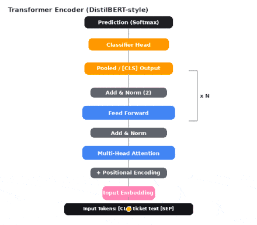
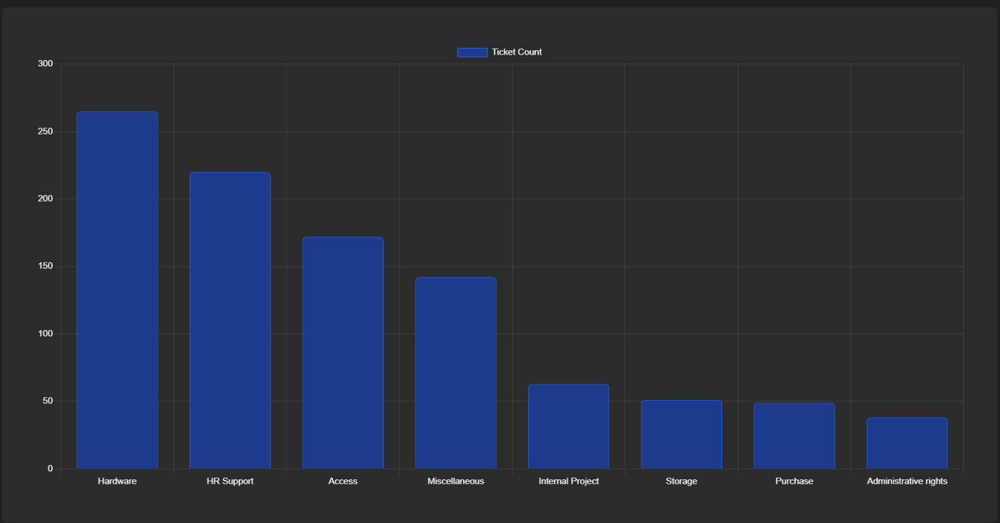

NLP · Deep Learning
IT Ticket Classification System
An intelligent IT support ticket classification system using a fine-tuned DistilBERT model for automatic categorisation across eight support categories. The system supports both single-ticket and bulk CSV prediction with an interactive analytics dashboard for efficient IT service management.

Transformer Workflow

Prediction Dashboard
- DistilBERT accuracy
- 88%
- Categories
- 8
- Prediction modes
- Single & bulk CSV
- Dashboard
- Interactive analytics
PythonPyTorchBERTFlaskPandasChart.js